Machine Learning with Python:
Topic Modeling
Austin ACM SIGKDD
by Christine Doig
This talk
http://chdoig.github.com/acm-sigkdd-topic-modeling
Introduction
Machine Learning with Python course
Topic Modeling
Definitions
Characteristics
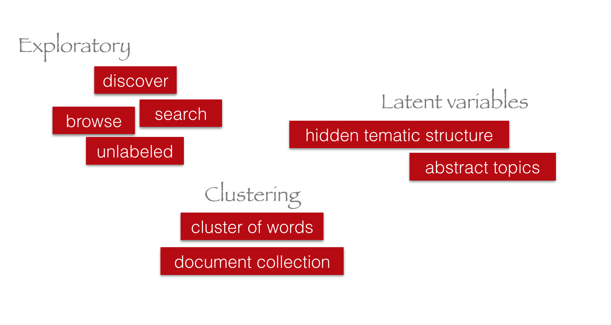Diagram
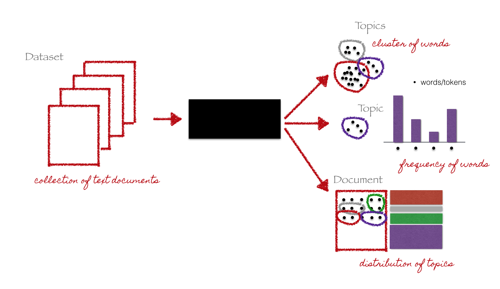LDA
LDA vs LDA
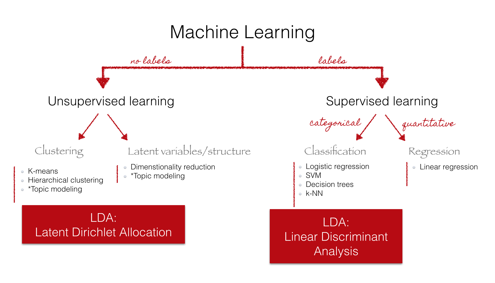LDA Plate notation
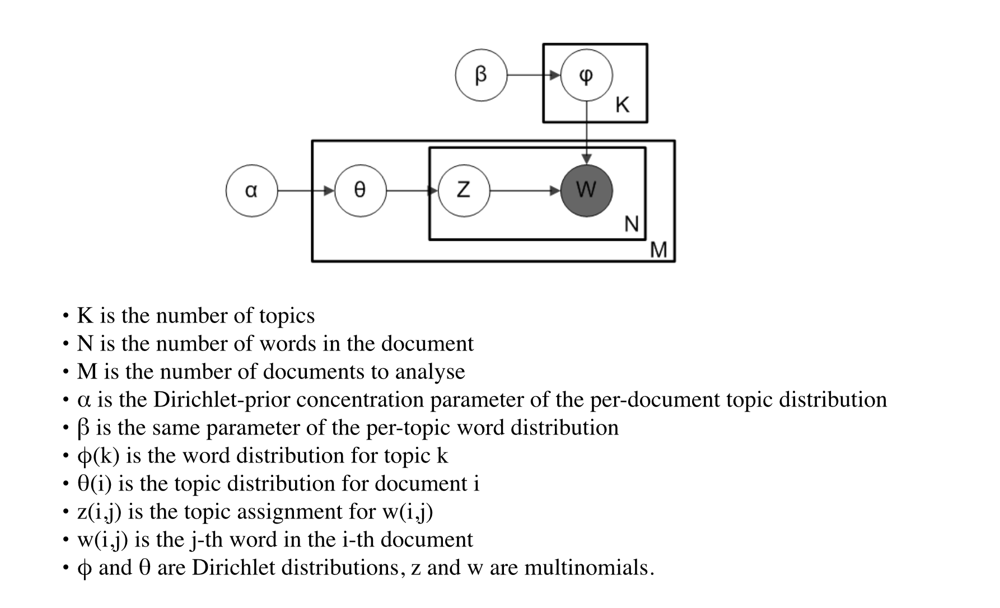Parameters and variables
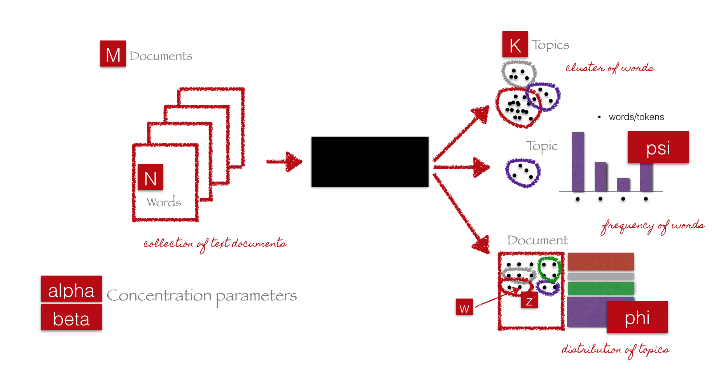Understanding LDA
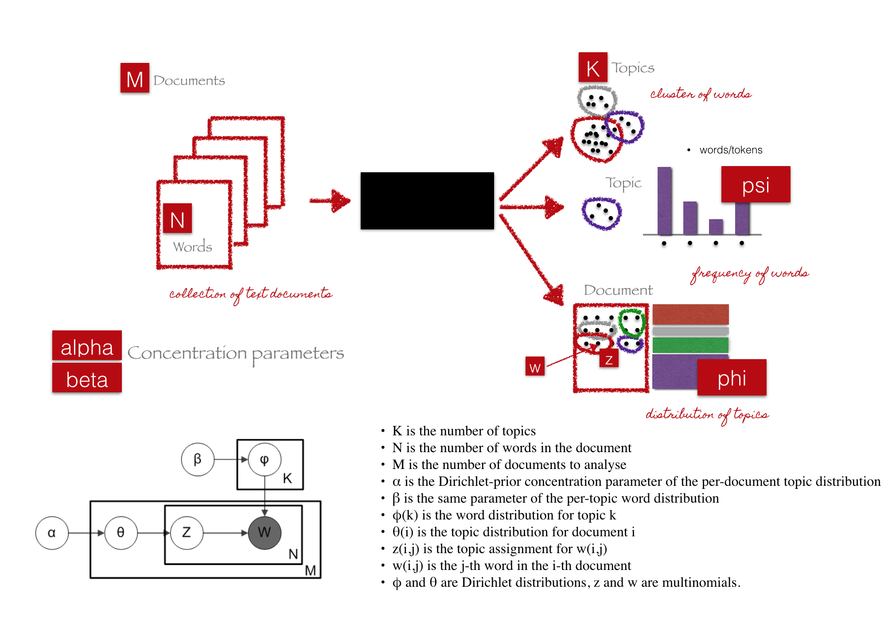LDA algorithm
Iterative algorithm
- Initialize parameters
- Initialize topic assignments randomly
- Iterate
- Resample topic for word, given all other words and their current topic assignments
- Get results
- Evaluate model
- For each word in each document:
Initialize parameters
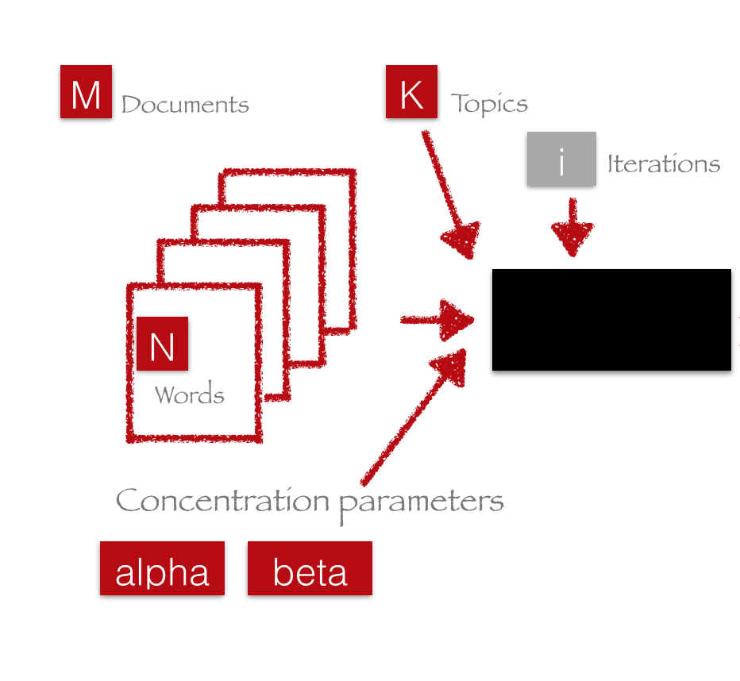Initialize topic assignments randomly
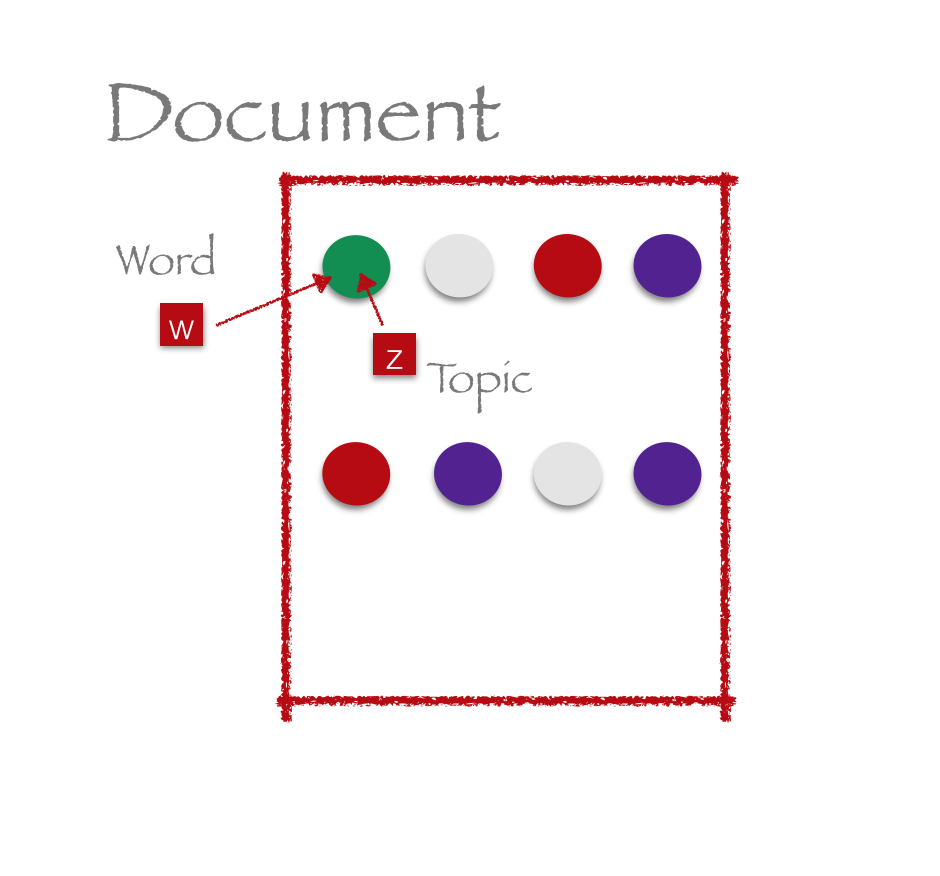Iterate
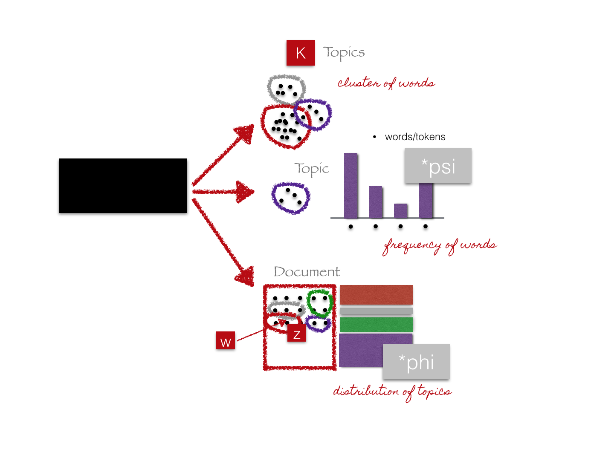Resample topic for word, given all other words and their current topic assignments
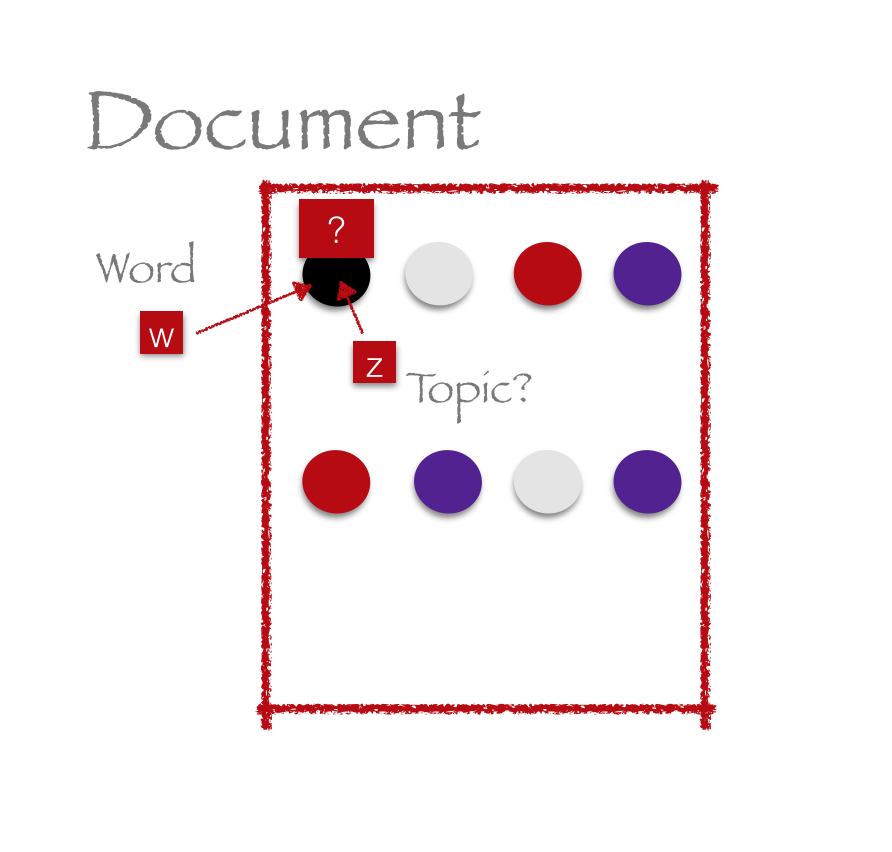Resample topic for word, given all other words and their current topic assignments
When to stop?
Get results
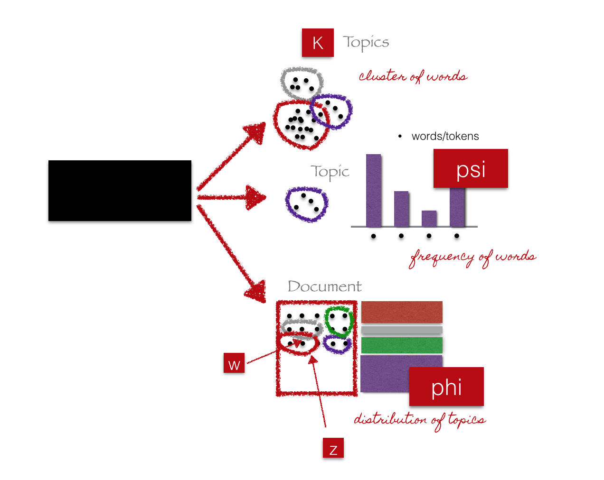Evaluate model
Hard: Unsupervised learning. No labels.
Human-in-the-loop
Evaluate model
Human-in-the-loop
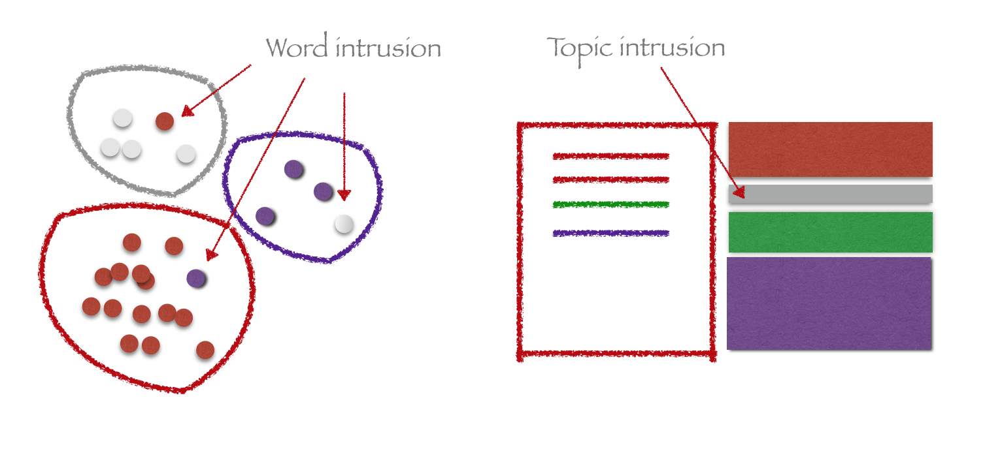Evaluate model
Metrics
Evaluate model
Metrics
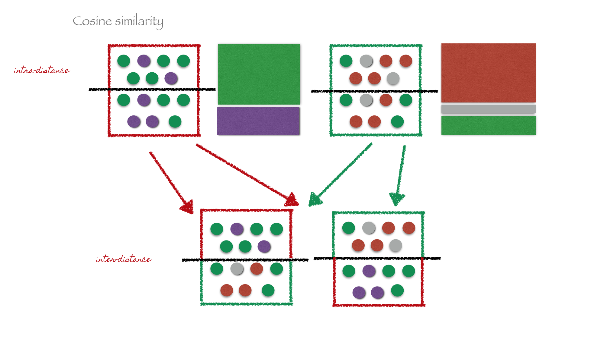Evaluate model
More Metrics [1]:
Python libraries
Python libraries
Warning: LDA in scikit-learn refers to Linear Discriminant Analysis!
scikit-learn implements alternative algorithms, e.g. NMF (Non Negative Matrix Factorization) [1][2]
Gensim
>>> import gensim
# load id->word mapping (the dictionary)
>>> id2word = gensim.corpora.Dictionary.load_from_text('wiki_en_wordids.txt')
# load corpus iterator
>>> mm = gensim.corpora.MmCorpus('wiki_en_tfidf.mm')
# extract 100 LDA topics, using 20 full passes, (batch mode) no online updates
>>> lda = gensim.models.ldamodel.LdaModel(corpus=mm, id2word=id2word, num_topics=100, update_every=0, passes=20)
Graphlab
>>> import graphlab as gl
>>> docs = graphlab.SArray('http://s3.amazonaws.com/dato-datasets/nytimes')
>>> m = gl.topic_model.create(docs,
num_topics=20, # number of topics
num_iterations=10, # algorithm parameters
alpha=.01, beta=.1) # hyperparameters
lda
>>> import lda
>>> X = lda.datasets.load_reuters()
>>> model = lda.LDA(n_topics=20, n_iter=1500, random_state=1)
>>> model.fit(X) # model.fit_transform(X) is also available
Pipeline
Pipeline
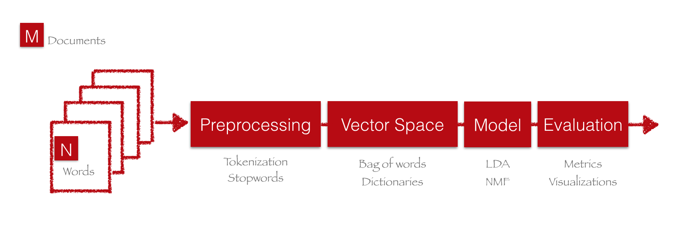Preprocessing
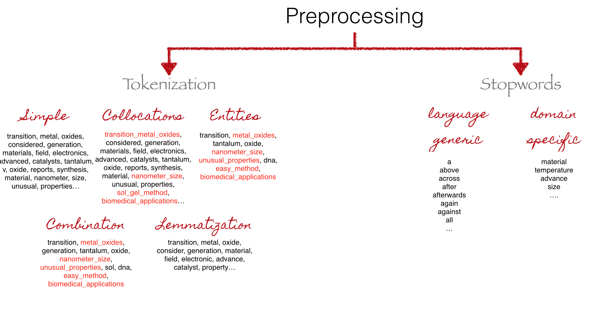Vector Space
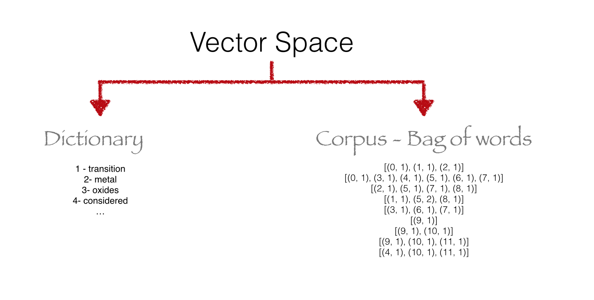Other algorithms
Dynamic Topic Models
NMF
Visualizations and applications
https://de.dariah.eu/tatom/topic_model_visualization.html#topic-model-visualizationAdditional resources
Questions?
Slides:
http://chdoig.github.com/acm-sigkdd-topic-modeling
Email: christine.doig@continuum.io
Twitter: ch_doig